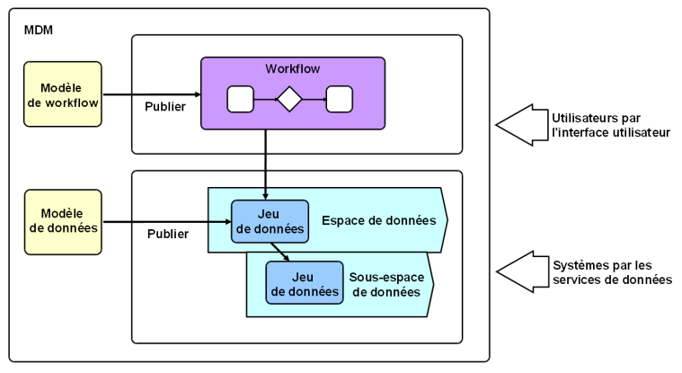
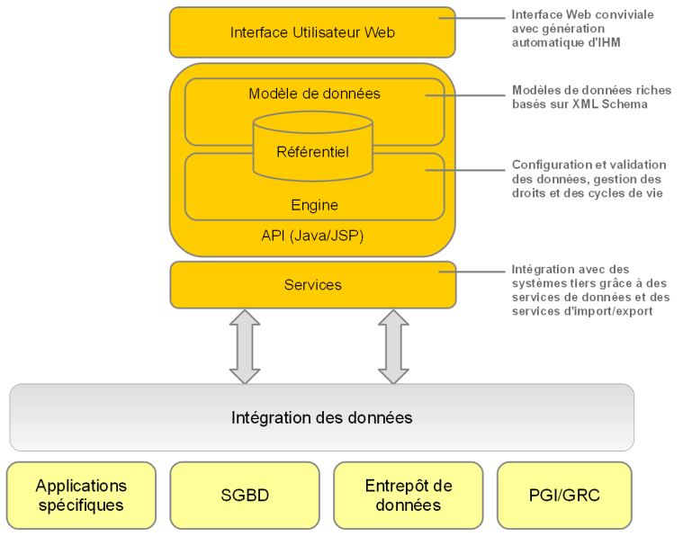

Notions clés
Contenu de la section
Concepts et outils associés

La gestion des données de référence (plus connue sous l'acronyme MDM pour Master Data Management) est un moyen de mieux modéliser, gérer et ultimement gouverner vos données partagées. La duplication des données au sein de plusieurs systèmes informatiques et son partage par des équipes professionnelles multiples rend critique le besoin d'avoir une version unique et une gouvernance de vos données de référence.
Avec EBX5, les utilisateurs métier et les informaticiens peuvent collaborer sur une seule et unique solution unifiée de manière à concevoir des modèles de données et gérer le contenu des données de référence.
EBX5 est un logiciel de gestion des données de référence qui permet de modéliser tout type de données de référence et d'y appliquer une gouvernance grâce à des outils avancés comme le workflow collaboratif, le contrôle de l'édition des données, la gestion hiérarchique des données, le contrôle de version, et la sécurité.
Un projet MDM sur EBX5 commence par la création d'un modèle de données. C'est là que vous définissez les tables, les champs, les liens et les règles métier permettant de décrire vos données de référence. De bons exemples sont les catalogues de produits, les hiérarchies financières, la liste des fournisseurs ou simplement les tables de référence.
Votre modèle de données peut ensuite être publié en tant que jeu de données, stockant le contenu actuel de vos données de référence. Un jeu de données se trouve dans un espace de données. Un espace de données est un conteneur, qui permet d'isoler des mises à jour ; cela est très utile si vous avez besoin de travailler sur plusieurs versions parallèles de vos données, de réaliser une analyse d'impact ou de travailler en "espaces de démonstration".
Une fois que tout est prêt à l'emploi, vous pouvez définir des processus de gestion des données, que vous allez exprimer sous forme de modèles de workflow dans EBX5. Ces modèles détaillent les tâches à accomplir ainsi que les responsabilités associées. Après publication de ces modèles, il sont disponibles à l'usage sous forme de workflows.
Les workflows sont de grande valeur si vous avez besoin de réaliser une gestion contrôlée du changement ou une validation des données pas à pas impliquant des utilisateurs multiples. Une fois démarrés, des notifications sont envoyées aux utilisateurs sur le nombre de bons de travail mis à leur disposition dans un contexte de travail collaboratif.
Les services de données aide à intégrer EBX5 à des systèmes tiers (middlewares), en leur permettant d'accéder aux données, ou de gérer des espaces de données et/ou des workflows.
Les mots-clés à comprendre sont :
Des définitions détaillées peuvent être trouvées dans notre glossaire.
Architecture
Le schéma suivant présente l'architecture de EBX5.

 Sommaire du guide utilisateur
Sommaire du guide utilisateur